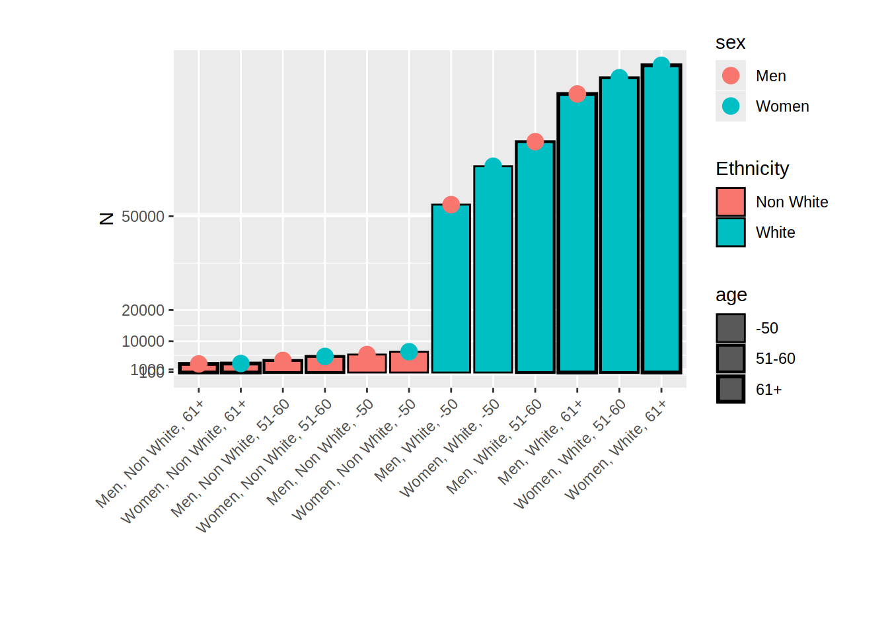
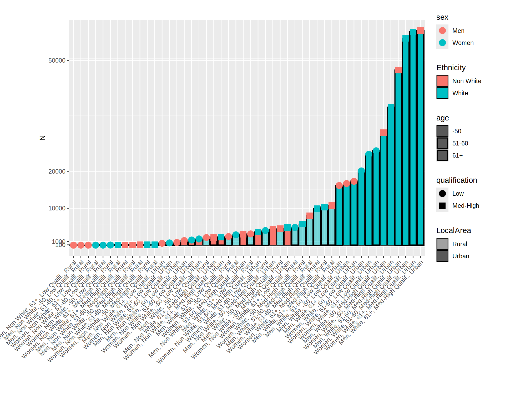

2 Create stratas
2.1 Choose variables
For the first example, we use real data from the UKBB, with the following variables: age, declared binary sex category (men or women), ethnicity (white or non-white). Outcomes will be a 4th later intersectional category describing cultural/intellectual ressources, i.e. either age at the end of education (quantitative variables) or level of qualification (binary variable).
In a second step, we use age, declared binary sex category, ethnicity, level of qualification and life place (rural, urban) as intersectional categories and the outcomes were: feeling lonely and exposition to air pollution (pm10, ugm3).
There are no variables characterizing socio-economic position at the start of life in this dataset.
This is an exploratory and not a confirmatory analysis, the results are purely didactic and cannot be really interpreted. In particular, for simplicity, a simple imputation of missing data (KNN) has been carried out, which may affect the results.
mydata$Sex <- factor(round(mydata$Sex),
labels = c("Women","Men"))
mydata$Ethnicity <- factor(round(mydata$Ethnicity),
label = c("Non White","White"))
mydata <- mydata %>%
# recode age into three groups
mutate(Age_class = round(Age)) %>%
recode_values(
select = "Age_class",
recode = list(`1` = "min:50", `2` = 51:60, `3` = "61:max")) %>%
mutate(Age_class = factor(Age_class, labels = c("-50", "51-60", "61+")))
mydata$Qualification <- factor(round(mydata$Qualification),
labels = c("Med-High Qualif.", "Low Qualif."))
mydata$Urban <- factor(round(mydata$Urban),
labels = c("Rural", "Urban"))
mydata$Loneliness <- factor(round(mydata$Loneliness),
labels = c("No", "Yes"))
table1::table1(~ Sex + Age + Ethnicity + AgeEducEnd + Qualification + Urban + Loneliness + AirPoll_PM10,
data=mydata,
overall=c(left="Total"),
caption="Description")| Total (N=502461) |
|
|---|---|
| Sex | |
| Women | 273354 (54.4%) |
| Men | 229107 (45.6%) |
| Age | |
| Mean (SD) | 56.5 (8.10) |
| Median [Min, Max] | 58.0 [37.0, 73.0] |
| Ethnicity | |
| Non White | 27037 (5.4%) |
| White | 475424 (94.6%) |
| AgeEducEnd | |
| Mean (SD) | 16.8 (1.98) |
| Median [Min, Max] | 16.1 [5.00, 35.0] |
| Qualification | |
| Med-High Qualif. | 356623 (71.0%) |
| Low Qualif. | 145838 (29.0%) |
| Urban | |
| Rural | 68955 (13.7%) |
| Urban | 433506 (86.3%) |
| Loneliness | |
| No | 410974 (81.8%) |
| Yes | 91487 (18.2%) |
| AirPoll_PM10 | |
| Mean (SD) | 16.2 (1.86) |
| Median [Min, Max] | 16.1 [11.8, 31.4] |
2.2 Create strata variables
To create the stratas, I use the method describe in the vignette in the [ggeffects]:https://strengejacke.github.io/ggeffects/articles/practical_intersectionality.html package.
This involves concatenating the labels of the different variables. Remember to name the variable in the label, for example Ethnicity[White;Non White] rather than White[Yes;No].
mydata$strata <- ifelse(
is.na(mydata$Sex) | is.na(mydata$Ethnicity) | is.na(mydata$Age_class),
NA_character_,
paste0(mydata$Sex, ", ", mydata$Ethnicity, ", ", mydata$Age_class)
)
mydata$strata <- factor(mydata$strata)
# data_tabulate(mydata$strata)
table1::table1(~ strata,
data=mydata,
overall=c(left="Total"),
caption="Stratas (12)")| Total (N=502461) |
|
|---|---|
| strata | |
| Men, Non White, -50 | 5749 (1.1%) |
| Men, Non White, 51-60 | 3856 (0.8%) |
| Men, Non White, 61+ | 2754 (0.5%) |
| Men, White, -50 | 53729 (10.7%) |
| Men, White, 51-60 | 73877 (14.7%) |
| Men, White, 61+ | 89142 (17.7%) |
| Women, Non White, -50 | 6652 (1.3%) |
| Women, Non White, 51-60 | 5149 (1.0%) |
| Women, Non White, 61+ | 2877 (0.6%) |
| Women, White, -50 | 66015 (13.1%) |
| Women, White, 51-60 | 94340 (18.8%) |
| Women, White, 61+ | 98321 (19.6%) |
And with more categories:
mydata$strata_2 <- ifelse(
is.na(mydata$Sex) | is.na(mydata$Ethnicity) |
is.na(mydata$Age_class) | is.na(mydata$Qualification) | is.na(mydata$Urban),
NA_character_,
paste0(mydata$Sex, ", ", mydata$Ethnicity, ", ",
mydata$Age_class,", ", mydata$Qualification,", ", mydata$Urban)
)
mydata$strata_2 <- factor(mydata$strata_2)
table1::table1(~ strata_2,
data=mydata,
overall=c(left="Total"),
caption="Stratas (48)")| Total (N=502461) |
|
|---|---|
| strata_2 | |
| Men, Non White, -50, Low Qualif., Rural | 23 (0.0%) |
| Men, Non White, -50, Low Qualif., Urban | 1254 (0.2%) |
| Men, Non White, -50, Med-High Qualif., Rural | 111 (0.0%) |
| Men, Non White, -50, Med-High Qualif., Urban | 4361 (0.9%) |
| Men, Non White, 51-60, Low Qualif., Rural | 24 (0.0%) |
| Men, Non White, 51-60, Low Qualif., Urban | 739 (0.1%) |
| Men, Non White, 51-60, Med-High Qualif., Rural | 96 (0.0%) |
| Men, Non White, 51-60, Med-High Qualif., Urban | 2997 (0.6%) |
| Men, Non White, 61+, Low Qualif., Rural | 13 (0.0%) |
| Men, Non White, 61+, Low Qualif., Urban | 531 (0.1%) |
| Men, Non White, 61+, Med-High Qualif., Rural | 77 (0.0%) |
| Men, Non White, 61+, Med-High Qualif., Urban | 2133 (0.4%) |
| Men, White, -50, Low Qualif., Rural | 2088 (0.4%) |
| Men, White, -50, Low Qualif., Urban | 16687 (3.3%) |
| Men, White, -50, Med-High Qualif., Rural | 4483 (0.9%) |
| Men, White, -50, Med-High Qualif., Urban | 30471 (6.1%) |
| Men, White, 51-60, Low Qualif., Rural | 2350 (0.5%) |
| Men, White, 51-60, Low Qualif., Urban | 16154 (3.2%) |
| Men, White, 51-60, Med-High Qualif., Rural | 7991 (1.6%) |
| Men, White, 51-60, Med-High Qualif., Urban | 47382 (9.4%) |
| Men, White, 61+, Low Qualif., Rural | 3058 (0.6%) |
| Men, White, 61+, Low Qualif., Urban | 17290 (3.4%) |
| Men, White, 61+, Med-High Qualif., Rural | 10749 (2.1%) |
| Men, White, 61+, Med-High Qualif., Urban | 58045 (11.6%) |
| Women, Non White, -50, Low Qualif., Rural | 51 (0.0%) |
| Women, Non White, -50, Low Qualif., Urban | 1698 (0.3%) |
| Women, Non White, -50, Med-High Qualif., Rural | 152 (0.0%) |
| Women, Non White, -50, Med-High Qualif., Urban | 4751 (0.9%) |
| Women, Non White, 51-60, Low Qualif., Rural | 27 (0.0%) |
| Women, Non White, 51-60, Low Qualif., Urban | 1406 (0.3%) |
| Women, Non White, 51-60, Med-High Qualif., Rural | 132 (0.0%) |
| Women, Non White, 51-60, Med-High Qualif., Urban | 3584 (0.7%) |
| Women, Non White, 61+, Low Qualif., Rural | 26 (0.0%) |
| Women, Non White, 61+, Low Qualif., Urban | 624 (0.1%) |
| Women, Non White, 61+, Med-High Qualif., Rural | 63 (0.0%) |
| Women, Non White, 61+, Med-High Qualif., Urban | 2164 (0.4%) |
| Women, White, -50, Low Qualif., Rural | 2811 (0.6%) |
| Women, White, -50, Low Qualif., Urban | 20094 (4.0%) |
| Women, White, -50, Med-High Qualif., Rural | 5729 (1.1%) |
| Women, White, -50, Med-High Qualif., Urban | 37381 (7.4%) |
| Women, White, 51-60, Low Qualif., Rural | 3965 (0.8%) |
| Women, White, 51-60, Low Qualif., Urban | 24592 (4.9%) |
| Women, White, 51-60, Med-High Qualif., Rural | 9856 (2.0%) |
| Women, White, 51-60, Med-High Qualif., Urban | 55927 (11.1%) |
| Women, White, 61+, Low Qualif., Rural | 4801 (1.0%) |
| Women, White, 61+, Low Qualif., Urban | 25532 (5.1%) |
| Women, White, 61+, Med-High Qualif., Rural | 10279 (2.0%) |
| Women, White, 61+, Med-High Qualif., Urban | 57709 (11.5%) |
In this case, some stratas are very small.
2.3 Plots the stratas distribution
df <- data.frame(x = names(table(mydata$strata)),
p = as.numeric(table(mydata$strata))/length(mydata$strata),
n = as.numeric(table(mydata$strata)))
df$sex = as.factor(ifelse(grepl("Men", df$x), "Men", "Women"))
df$ethnicity <- as.factor(ifelse(grepl("Non White", df$x), "Non White", "White"))
df$age <- as.factor(ifelse(grepl("61+", df$x), "61+",
ifelse(grepl("-50", df$x), "-50","51-60")))
ggplot(data = df) +
geom_col(aes(x = fct_reorder(x,n,.fun='median'), y = n,
linewidth = age, fill = ethnicity), color = "black") +
geom_point(aes(x = fct_reorder(x,n,.fun='median'), y = n,
color = sex), size =4) +
theme(plot.margin = margin(1,1,1.5,2, "cm"))+
labs (x="", y = "N",
fill = "Ethnicity") +
theme(axis.text.x = element_text(angle = 45, vjust=1, hjust=1))+
scale_linewidth_discrete(range = c(0.5, 1))+
# scale_y_log10()
scale_y_continuous(breaks = c(100, 1000, 10000, 20000, 50000))+
scale_shape_manual(values=c(19, 15))
df_2 <- data.frame(x = names(table(mydata$strata_2)),
p = as.numeric(table(mydata$strata_2))/length(mydata$strata_2),
n = as.numeric(table(mydata$strata_2)))
df_2$sex = as.factor(ifelse(grepl("Men", df_2$x), "Men", "Women"))
df_2$ethnicity <- as.factor(ifelse(grepl("Non White", df_2$x), "Non White", "White"))
df_2$age <- as.factor(ifelse(grepl("61+", df_2$x), "61+",
ifelse(grepl("-50", df_2$x), "-50","51-60")))
df_2$qualification <- as.factor(ifelse(grepl("Low", df_2$x), "Low", "Med-High"))
df_2$LocalArea <- as.factor(ifelse(grepl("Urban", df_2$x), "Urban", "Rural"))
ggplot(data = df_2) +
geom_col(aes(x = fct_reorder(x,n,.fun='median'), y = n,
linewidth = age, fill = ethnicity, alpha = LocalArea), color = "black") +
geom_point(aes(x = fct_reorder(x,n,.fun='median'), y = n,
shape = qualification, color = sex), size =4) +
theme(plot.margin = margin(1,1,1.5,2, "cm"))+
labs (x="", y = "N",
fill = "Ethnicity") +
theme(axis.text.x = element_text(angle = 45, vjust=1, hjust=1))+
scale_alpha_discrete(range = c(0.5, 1))+
scale_linewidth_discrete(range = c(0.5, 1))+
# scale_y_log10()
scale_y_continuous(breaks = c(100, 1000, 10000, 20000, 50000))+
scale_shape_manual(values=c(19, 15))## Warning: Using alpha for a discrete variable is not advised.## Warning: Using linewidth for a discrete variable is not advised.